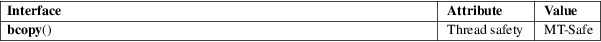

bcopy − copy byte sequence
Standard C library (libc, −lc)
#include <strings.h>
[[deprecated]] void bcopy(const void src[.n], void dest[.n], size_t n);
The bcopy() function copies n bytes from src to dest. The result is correct, even when both areas overlap.
None.
For an explanation of the terms used in this section, see attributes(7).

None.
4.3BSD.
Marked as LEGACY in POSIX.1-2001: use memcpy(3) or memmove(3) in new programs. Note that the first two arguments are interchanged for memcpy(3) and memmove(3). POSIX.1-2008 removes the specification of bcopy().
bstring(3), memccpy(3), memcpy(3), memmove(3), strcpy(3), strncpy(3)